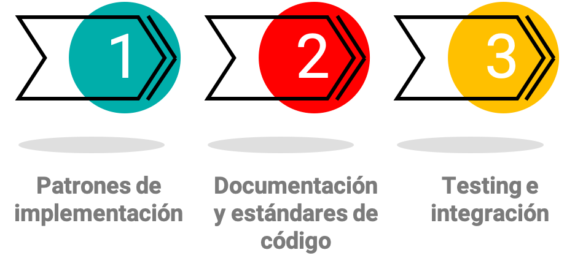
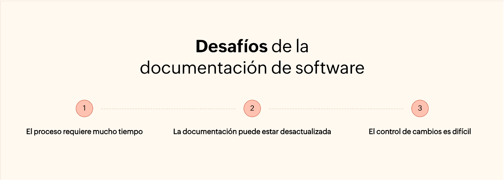

Unidad 12: Implementación, integración y pruebas#
Contenido de la unidad#
Documentación de software.#
La documentación de software es uno de los aspectos fundamentales del proceso de desarrollo de software. La documentación técnica adecuada hará que la información sea de fácil acceso y también reducirá la curva de aprendizaje.
Cuando se trata de software, los cambios son casi inevitables. Es posible que su software deba experimentar numerosos cambios debido al entorno empresarial en cambio constante. Una sólida herramienta de documentación de software le permite realizar las modificaciones necesarias en su software sin grandes complicaciones.
Tipos de documentación de software#
Documentación de Requerimientos (Requirements Documentation):#
Propósito: Captura y describe los requisitos funcionales y no funcionales del software. Define qué debe hacer el sistema y qué criterios debe cumplir.
Contenido: Casos de uso, historias de usuario, especificaciones técnicas, diagramas de flujo, y cualquier otra información relevante sobre los requisitos.

Documentación de Diseño (Design Documentation):#
Propósito: Detalla la arquitectura y el diseño del sistema. Permite que los desarrolladores comprendan cómo se estructurará el software antes de la implementación.
Contenido: Diagramas de arquitectura, diagramas de clases, diagramas de secuencia, diseño de bases de datos, y cualquier otra representación visual o descripción detallada del diseño.

Documentación de Código (Code Documentation):#
Propósito: Facilita la comprensión del código fuente. Incluye comentarios en el código y documentación generada automáticamente.
Contenido: Comentarios en el código explicando su funcionamiento, documentación de funciones y clases, y uso de herramientas como Javadoc, Doxygen o Sphinx.
Documentación de Pruebas (Testing Documentation):#
Propósito: Describe los planes de pruebas, casos de pruebas, resultados y evidencia de pruebas realizadas en el software.
Contenido: Plan de pruebas, casos de pruebas, resultados de pruebas, informes de errores, evidencia de pruebas automatizadas, y documentación de cobertura de pruebas.

Documentación de Proyecto (Project Documentation):#
Propósito: Ofrece una visión general del proyecto, incluyendo el alcance, los objetivos, el cronograma y los recursos involucrados.
Contenido: Plan de proyecto, diagramas de Gantt, lista de tareas, presupuesto, y cualquier documento relacionado con la gestión del proyecto.

Documentación de Configuración (Configuration Documentation):#
Propósito: Registra las configuraciones del entorno de desarrollo, como bibliotecas, versiones de software y dependencias.
Contenido: Listas de bibliotecas y versiones, instrucciones de instalación y configuración, y detalles sobre el entorno de desarrollo.

Documentación de Despliegue (Deployment Documentation):#
Propósito: Describe cómo implementar el software en un entorno de producción, incluyendo la configuración y los pasos necesarios.
Contenido: Instrucciones de implementación, configuración de servidores, scripts de despliegue y cualquier detalle relacionado con el despliegue.

Documentación de Usuarios (User Documentation):#
Propósito: Orienta a los usuarios finales sobre cómo utilizar el software. Proporciona manuales de usuario y materiales de capacitación.
Contenido: Manuales de usuario, guías de inicio rápido, tutoriales, y cualquier recurso destinado a los usuarios finales.

Documentación de API (API Documentation):#
Propósito: Describe cómo interactuar con las API del software, incluyendo detalles de rutas, parámetros y respuestas esperadas.
Contenido: Descripciones de API, ejemplos de solicitudes y respuestas, documentación de autenticación, y ejemplos de código.

Documentación de Mantenimiento (Maintenance Documentation):#
Propósito: Facilita el mantenimiento del software a lo largo del tiempo. Incluye información sobre actualizaciones, parches y cambios.
Contenido: Registro de cambios, notas de versión, instrucciones de actualización y cualquier información relevante para el mantenimiento continuo.

La documentación adecuada en estos tipos es esencial para un desarrollo de software exitoso en equipos, ya que mejora la comunicación, la colaboración y la comprensión del proyecto en todos los niveles. Cada tipo de documentación tiene su propio propósito y contribuye al ciclo de vida del desarrollo de software.
Veamos la documentación de código#
Docstrings#
Los docstrings son cadenas de texto que se encuentran en el código fuente de un programa. Se utilizan para documentar el código y se pueden extraer automáticamente para generar documentación de API.
Diferentes modelos de docstrings#
Existen diferentes modelos de docstrings, como Google, Numpy, Sphinx, entre otros. Cada modelo tiene su propio formato y convenciones.
Google
def calculate_area(length, width):
"""
Calculate the area of a rectangle.
Args:
length (float): The length of the rectangle.
width (float): The width of the rectangle.
Returns:
float: The area of the rectangle.
Example:
>>> calculate_area(5, 3)
15.0
"""
return length * width
Numpy
def calculate_area(length, width):
"""
Calculate the area of a rectangle.
Parameters
----------
length : float
The length of the rectangle.
width : float
The width of the rectangle.
Returns
-------
float
The area of the rectangle.
Examples
--------
>>> calculate_area(5, 3)
15.0
"""
return length * width
Sphinx
def calculate_area(length, width):
"""
Calculate the area of a rectangle.
:param length: The length of the rectangle.
:type length: float
:param width: The width of the rectangle.
:type width: float
:returns: The area of the rectangle.
:rtype: float
:Example:
>>> calculate_area(5, 3)
15.0
"""
return length * width
Estándares de codificación#
Los estándares de codificación son un conjunto de reglas y pautas que se utilizan al escribir el código fuente de un programa. Estas reglas y pautas ayudan a mejorar la legibilidad del código y facilitan el mantenimiento del software.

¿Por qué son importantes los estándares de codificación?#
Los estándares de codificación son importantes porque:
Mejoran la legibilidad del código.
Facilitan el mantenimiento del software.
Mejoran la calidad del código.
Facilitan la colaboración entre desarrolladores.
Mejoran la eficiencia del desarrollo de software.
Reducen los costos de desarrollo de software.
Mejoran la compatibilidad del software.
¿Qué incluyen los estándares de codificación?#
Los estándares de codificación incluyen reglas y pautas sobre:
Nombres de variables
Nombres de funciones
Nombres de clases
Nombres de métodos
Nombres de paquetes
Nombres de módulos
Nombres de archivos
El estándar PEP#
Los Estándares de Código en Python, también conocidos como PEP (Python Enhancement Proposal), son documentos que establecen reglas y guías para la escritura de código Python consistente y legible. Estos estándares son ampliamente aceptados en la comunidad de Python y contribuyen a la calidad y la coherencia del código en proyectos Python. A continuación, te presento algunos de los PEP más importantes relacionados con estándares de código en Python:
PEP 8: Guía de Estilo para Código Python:
Propósito: Define las convenciones de estilo para la escritura de código Python, incluyendo reglas sobre indentación, espacios en blanco, nombres de variables, comentarios y más.
Ejemplo: El ejemplo de PEP 8 que mencioné anteriormente describe las reglas de estilo para Python.
def print_square(side_length):
"""
Print a square pattern of asterisks.
Args:
side_length (int): The length of each side of the square.
"""
for i in range(side_length):
# Utiliza espacios en blanco de manera consistente alrededor de operadores.
print("* " * side_length) # Incluye un espacio después de "*".
# Organiza los imports de manera ordenada y con líneas en blanco entre grupos de imports.
import math
PEP 20: El Zen de Python:
Propósito: Resume los principios de diseño y filosofía de Python. Proporciona una guía general sobre cómo escribir código Python de forma clara y legible.
Ejemplo: “La legibilidad cuenta.” es uno de los principios del Zen de Python.
# 1. Legibilidad cuenta.
# Es importante que el código sea fácil de leer y entender.
def calculate_average(numbers):
"""
Calculate the average of a list of numbers.
Args:
numbers (list): A list of numeric values.
Returns:
float: The average value.
"""
if not numbers:
return 0.0 # 2. Los errores nunca deberían pasar en silencio.
total = sum(numbers)
count = len(numbers)
# 3. A menos que seas explícitamente silenciado.
try:
average = total / count
except ZeroDivisionError as e:
raise ValueError("Can't divide by zero") from e
# 4. En cara a la ambigüedad, rechaza la tentación de adivinar.
return round(average, 2) # 5. Debería haber una - y preferiblemente solo una - manera obvia de hacerlo.
PEP 257: Docstring Conventions:
Propósito: Define las convenciones para escribir docstrings en Python. Proporciona reglas sobre el formato y el contenido de los docstrings.
Ejemplo: El ejemplo de docstring que mencioné anteriormente describe las reglas para escribir docstrings en Python.
PEP 484: Type Hints:
Propósito: Define las convenciones para agregar anotaciones de tipo a Python. Proporciona reglas sobre cómo especificar tipos en Python.
Ejemplo:
def add(a: int, b: int) -> int:
return a + b
Seguir estos estándares contribuye a la legibilidad, la coherencia y la calidad del código Python, lo que facilita la colaboración en proyectos y el mantenimiento a largo plazo.
snake_case vs. camelCase y PascalCase#
Son tipos de convenciones de nomenclatura utilizadas en la programación para nombrar variables, funciones, clases y otros elementos del código. Estas convenciones determinan cómo se deben escribir y formatear los nombres de identificadores en un lenguaje de programación.
snake_case#
Propósito: Escribir palabras en minúsculas y separarlas con guiones bajos.
Ejemplo:
calculate_average,print_square,side_length.
camelCase#
Propósito: Escribir palabras en minúsculas y separarlas con mayúsculas.
Ejemplo:
calculateAverage,printSquare,sideLength.Nota: En Python, el camelCase se usa principalmente para nombres de clases.
PascalCase#
Propósito: Escribir palabras en mayúsculas y separarlas con mayúsculas.
Ejemplo:
CalculateAverage,PrintSquare,SideLength.
Actividad#
Realizar la documentación del repositorio del sistema de login que se encuentra en el siguiente enlace:
Realice toda la documentación del código usando el mismo tipo de docstring y el mismo estilo de tipado (snake_case, camelCase o PascalCase).